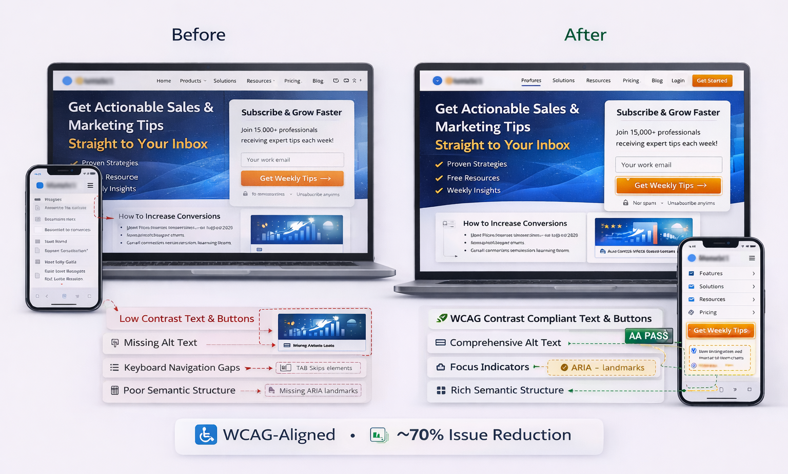

← Back
Case Study 07
Accessibility Transformation
Make high-converting pages inclusive
Context
Strong performance but poor accessibility.
Problems
Low contrast
Missing alt text
Keyboard gaps
Weak semantics
Strategy
WCAG contrast fixes
Alt text system
Keyboard flows
Semantic structure
